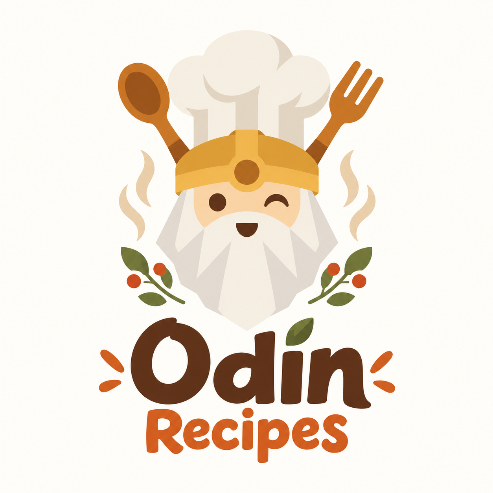
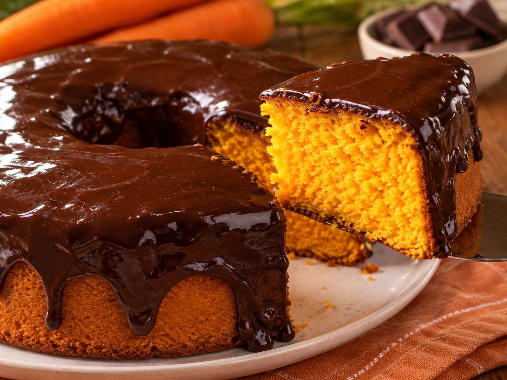
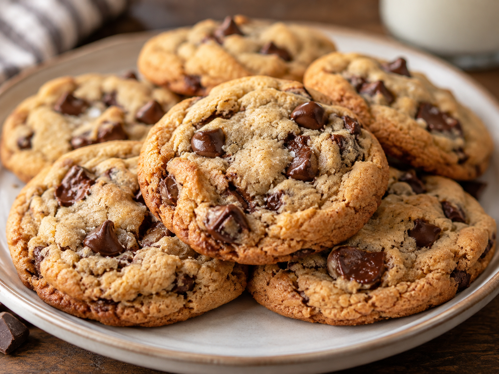

Welcome to Odin Recipes!
Odin Recipes is a simple place to discover tasty recipes, get inspired, and find something new to cook. Explore different dishes and choose your next favorite meal!
View Recipes
Explore Our Recipes

Delicious Cake Recipe

Delicious Lasagna Recipe

Delicious Pasta Recipe

Delicious Cookies Recipe
“Good food is like music: you can feel the passion of the person who created it in every bite. When you cook with soul, the dish comes alive.”
— Chef Gusteau, Ratatouille
About Odin Recipes
Odin Recipes is a learning project created as part of The Odin Project. It was built to practice HTML and CSS while exploring layout, styling, and web development fundamentals.